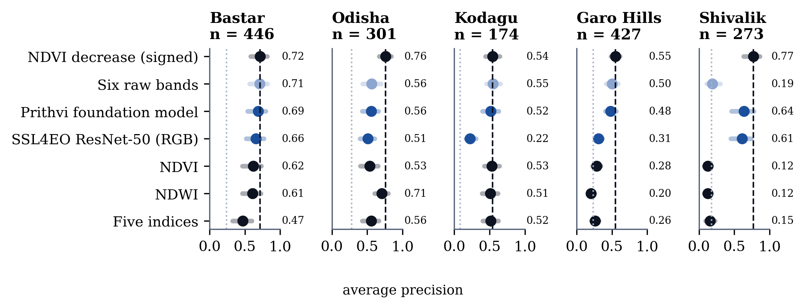
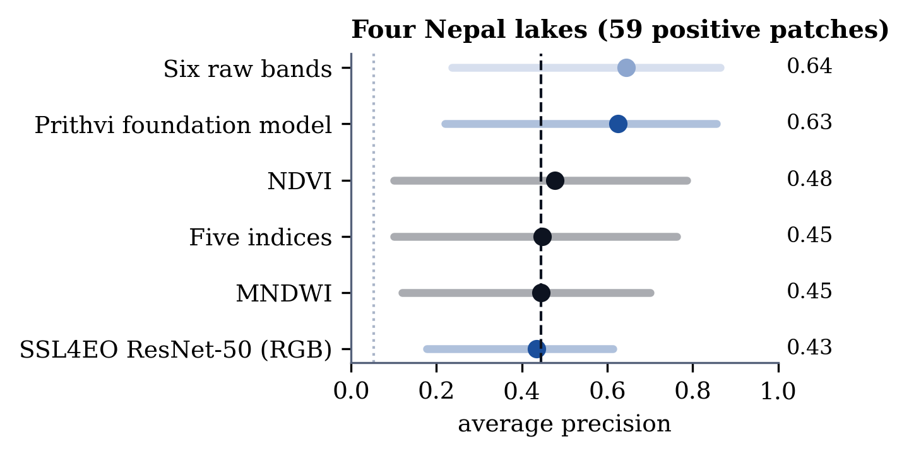
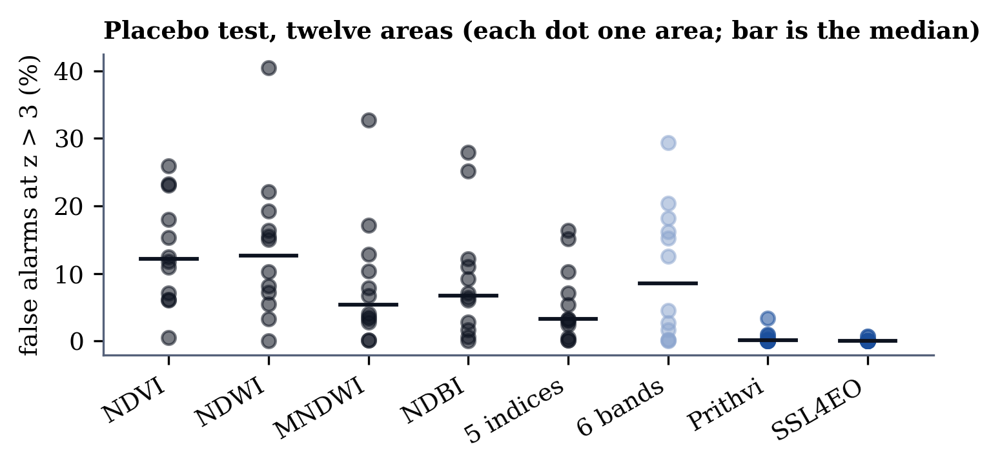
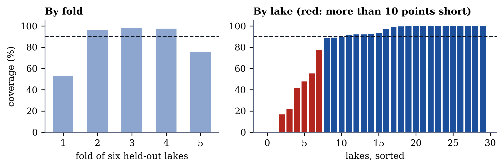

Foundation models pretrained on satellite imagery are promoted for change detection, but they are rarely compared with simple spectral indices under a common standard. We score six-band reflectance, five spectral indices, a signed NDVI-decrease baseline and two foundation-model embeddings (Prithvi-EO-2.0 and an SSL4EO-S12 ResNet-50) with one rule: the change between two periods, measured in units of the scene-to-scene noise within each period, which works for feature vectors of any length. We evaluate against independent products in two fields: forest loss in five Indian areas (Hansen Global Forest Change) and water-extent change at three Nepal glacial lakes (Sentinel-1 radar). On forest loss no foundation model beats the signed NDVI baseline in any of the five areas: Prithvi ties it in two (average precision 0.69 against 0.72 in Bastar; 0.52 against 0.54 in Kodagu) and is clearly worse in the other three (0.56 against 0.76 in Odisha, 0.48 against 0.55 in Garo Hills, 0.64 against 0.77 in the Shivalik foothills). On glacial lakes Prithvi (0.75) and plain raw bands (0.76) beat the MNDWI water index (0.57) and tie each other, so the gain is not attributable to pretraining, and the test rests on one changing lake. In a placebo test on twelve areas the embeddings raise 0 to 3.4% false alarms against up to 41% for indices. We also train a 1.9-million-weight U-Net to map lake water from Sentinel-1 radar and attach conformal area intervals; it agrees better with optical lake maps than a radar threshold (IoU 0.70 against 0.55 on unseen lakes) but 90% intervals cover only 87% of scenes across lakes and fail badly for a few. All code, scene lists and checksums are released.
Detecting where a landscape has changed between two dates is a basic task in remote sensing, and foundation models trained on millions of Sentinel-2 scenes [1, 2] are now offered as a general-purpose answer. Evidence that they beat the long-standing alternative, a spectral index such as NDVI thresholded on its difference, is thin and usually reported on benchmarks rather than against independent reference data, and almost never with the sampling noise between acquisitions taken into account. Two images of the same place never agree exactly: clouds, haze, sun angle and season change every pixel. A method that reports "change" without a notion of this noise cannot say how much of its output is real.
We ask a narrow question: when every method is judged against the same scene-to-scene noise and the same reference data, do foundation-model embeddings detect real surface change more reliably than spectral indices, and does the answer hold across fields? We contribute (i) a noise-calibrated change score that applies to any feature vector, (ii) a pre-specified evaluation in two fields (five forest areas and three glacial lakes) with spatial block bootstrap intervals, including a placebo test that needs no reference, and (iii) a negative-leaning result reported as such. As a second, smaller contribution we study how far a radar water model and its conformal intervals can be trusted across glacial lakes.
Optical. Sentinel-2 L2A scenes from the Element 84 Earth Search catalogue, six bands (blue, green, red, narrow NIR, SWIR1, SWIR2), cloud and snow masked with the scene classification layer. Forest periods use three clear scenes each, taken inside a single February to March window so seasonal state is matched; the 2018 lake window had only one clear scene per lake and the 2024 window three, so the lake noise scale comes from the later period alone.
Forest loss. Five areas of about 7.6 by 8 km, compared between February to March 2021 and February to March 2025. Bastar (Chhattisgarh) and Odisha were chosen first, both in central-east India. Three more were added to cover other forest types: Kodagu and Wayanad (moist evergreen forest and plantations, Western Ghats), Garo Hills (hill forest with shifting cultivation, Meghalaya) and the Shivalik foothills (sal and mixed forest, Uttarakhand). They were registered before any score was computed (studies/forest_expansion_prereg.yaml). Boxes centred on a stated point failed a label-only screen of at least 150 positive patches, because an arbitrary 8 km box of forest holds little recent clearing; we therefore amended the registration, still before any scene or score, so that each box is the one with the most positive patches inside a 0.4 degree window, chosen from Hansen labels alone. A fourth region, the Nepal Terai near Chitwan, failed the screen even with its best box (40 positives) and is not evaluated. As in Bastar and Odisha, the boxes therefore over-represent active clearing. The reference is Hansen Global Forest Change v1.12 [3]. A patch is positive if at least 10% of it was lost in 2022 to 2024 and clean if under 2% was lost in 2021 to 2024; patches between the two are set aside, and only patches with at least 50% forest cover are eligible.
Glacial lakes. Three Nepal lakes (Tsho Rolpa, Imja Tsho, Thulagi), October to November 2018 against 2024. The reference is the change in Sentinel-1 water frequency per patch (Sentinel-1 RTC from Microsoft Planetary Computer, radar scenes within 20 days of each window, only orbits that see the lake). A patch is positive if at least 25% of it changed water state and clean if under 5% did. Radar is a different sensor from the optical data under test, so the reference is not circular, but it has its own errors.
Radar water model. For 30 Nepal lakes (all Hi-MAG [4] outlines of 0.3 to 6 km inside Nepal) we paired 3,227 Sentinel-1 scenes (VV, VH) with a Sentinel-2 water mask taken within three days (2020 to 2022), using the optical mask as a weak label.
All references are other satellite products and are treated as agreement targets, not ground truth.
Each scene is reduced to one feature vector per pixel patch (160 m). Let and be the mean feature vectors over the and scenes of the earlier and later period. The raw change is . The noise is estimated from pairs of scenes in the same period, pooled over a patch neighbourhood because three scenes give only three pairs. The score is which is about 1 when nothing has changed, whatever the length or scale of the features. This is the version-2 change-versus-noise test of our earlier pipeline written for vectors.
All methods use the same patches and the same . Single indices (NDVI, NDWI, MNDWI, NDBI) and five indices together; six raw bands (standardised); two embeddings, Prithvi-EO-2.0-300M [1] (encoder only, single time step, six bands, 1,024 numbers per patch, L2 normalised) and an SSL4EO-S12 ResNet-50 [2] with layer-3 features from the RGB bands only (1,024 numbers per patch). Because is unsigned, forest loss also gets a signed NDVI-decrease baseline, which uses the sign of the NDVI change, and which an embedding cannot provide.
The design was fixed before any score was computed (scripts/run_fm_evaluation.py, scripts/run_fm_lake_evaluation.py). We report average precision (AP) and ROC-AUC against the reference labels, with 95% intervals from a spatial block bootstrap (blocks of patches, 500 resamples) and paired differences from a named baseline resampled on the same blocks, so that spatial autocorrelation does not make intervals too narrow.
One scene of a period is compared with the rest of the same period. Nothing has changed, so every patch with is a false alarm. This needs no reference data and was run on twelve areas.
A U-Net [5] (four downsampling steps, 1.94 million weights, BCE plus Dice loss restricted to valid optical pixels) takes VV, VH, slope and a missing-radar flag on crops around each lake. Pairs whose optical water was not at least 3 dB darker in radar than its surroundings were dropped. Whole lakes are split into train, calibration and test, and 2022 is held out in time on the training lakes. We then run 5-fold cross-validation over all 30 lakes, so every lake is predicted by a model that never saw it. Lake area is the predicted water patch touching a DEM-flat seed. Split conformal prediction [6, 7] with relative error (floor 0.1 km) gives an area interval per scene, calibrated on the out-of-fold errors of the other four folds and checked on the fold left out.
Figure 1 and Table 1 show AP against Hansen loss in five areas. No foundation model beats the signed NDVI-decrease score in any of them. Prithvi is not distinguishable from it in Bastar (0.69 against 0.72) and Kodagu (0.52 against 0.54), and clearly worse in Odisha (0.56 against 0.76), Garo Hills (0.48 against 0.55) and the Shivalik foothills (0.64 against 0.77). The RGB-only SSL4EO model is clearly worse in four areas and tied only in Bastar. Six raw bands tie the baseline in Bastar, Kodagu and Garo Hills but are far below it in Odisha and the Shivalik foothills; Prithvi is not better than raw bands in four of the five areas, and beats them only in the Shivalik foothills, where the unsigned scores of raw bands and indices are near chance (raw bands AP 0.19, AUC 0.47). Leaf state of deciduous sal forest in February to March can differ between years, which would give large unsigned change with no loss; we did not test this. At the fixed rule the embeddings catch more of the true loss but flag many more clean patches (Bastar: Prithvi 48% recall at 5.6% false positives, signed NDVI 24% at 0.6%); at a matched false-positive rate the baseline is at least as good. Noise calibration changes the threshold's meaning but not the ranking. Kodagu has few positives (8% of scored patches), so its AP values are low in absolute terms but well above chance.

| Score | Bastar | Odisha | Kodagu | Garo Hills | Shivalik |
|---|---|---|---|---|---|
| NDVI decrease (signed) | 0.72 (0.84) | 0.76 (0.84) | 0.54 (0.92) | 0.55 (0.78) | 0.77 (0.90) |
| Six raw bands | 0.71 (0.85) | 0.56 (0.76) * | 0.55 (0.93) | 0.50 (0.73) | 0.19 (0.47) * |
| Prithvi-EO-2.0 | 0.69 (0.88) | 0.56 (0.80) * | 0.52 (0.91) | 0.48 (0.78) * | 0.64 (0.90) * |
| SSL4EO ResNet-50 (RGB) | 0.66 (0.83) | 0.51 (0.75) * | 0.22 (0.76) * | 0.31 (0.66) * | 0.61 (0.89) * |
| NDVI (unsigned) | 0.62 (0.78) * | 0.53 (0.73) * | 0.53 (0.92) * | 0.28 (0.54) * | 0.12 (0.32) * |
| NDWI | 0.61 (0.74) * | 0.71 (0.83) * | 0.51 (0.90) * | 0.20 (0.41) * | 0.12 (0.31) * |
| Five indices | 0.47 (0.64) * | 0.56 (0.73) * | 0.52 (0.91) | 0.26 (0.52) * | 0.16 (0.44) * |
Figure 2 and Table 2 give the lake result against the radar reference, with paired intervals against MNDWI. Prithvi (AP 0.75) and six raw bands (0.76) beat MNDWI (0.57), with paired intervals that just exclude zero (+0.02 to +0.23 and +0.02 to +0.23); the RGB-only model and NDVI are not distinguishable from MNDWI. Prithvi and raw bands are indistinguishable from each other, so the improvement over MNDWI is not evidence that pretraining helps. Noise calibration matters here: raw bands score 0.755 with the noise-calibrated and 0.183 with the raw distance. The result rests on 44 positive patches, 34 of them at Imja Tsho, which grew from about 1.1 to 1.7 km ( Figure 3 ); Tsho Rolpa and Thulagi stayed about the same size, so this is effectively a test on one changing lake, and the intervals are wide. MNDWI is also a weak baseline at turbid, partly iced lakes: the optical rule's Imja area was 27% below the published outline.

| Score | AP (AUC) | Paired diff. from MNDWI |
|---|---|---|
| Six raw bands | 0.76 (0.91) | +0.02 to +0.23 * |
| Prithvi-EO-2.0 | 0.75 (0.92) | +0.02 to +0.23 * |
| NDVI | 0.61 (0.91) | -0.15 to +0.14 |
| MNDWI | 0.57 (0.86) | baseline |
| Five indices | 0.57 (0.89) | -0.13 to +0.11 |
| SSL4EO ResNet-50 (RGB) | 0.45 (0.86) | -0.32 to +0.23 |
In the placebo test on twelve areas (Figure 4) the two embedding models raise 0 to 3.4% false alarms at (medians under 0.5%), whereas indices and raw bands raise up to 41% (medians 3 to 13%). This should not be read as better detection: on Bastar, NDVI flags 23% of patches in the placebo test but only 1% of Hansen's clean patches in the real comparison, so the placebo rate depends on how alike the noise is in the two periods. A more likely reading is that embeddings vary little between scenes taken days apart but respond to differences between years (season, illumination, phenology) that the references do not count as change; we did not test this.

Over three training seeds the U-Net agrees with the optical water mask better than a radar Otsu threshold [8] on both test sets (Table 3): IoU 0.80 against 0.54 on a held-out year at known lakes, and against 0.55 on six unseen lakes. A first calibration on four lakes gave 90% intervals that covered only 74 to 78% of unseen-lake areas across seeds. Cross-validation over all 30 lakes improved this ( Table 4 ): coverage is 81%, 87% and 94% at the 80%, 90% and 95% targets, with median relative area error 9%. But the marginal guarantee hides large differences between lakes (Figure 5): two lakes are covered 0% of the time and eight of 30 lakes fall more than ten points short at the 90% target. We did not isolate the cause; small, partly iced or shadowed lakes are the likely candidates.
| Test set | Scenes | U-Net | Radar Otsu rule |
|---|---|---|---|
| Same lakes, held-out year (2022) | 387 | 0.80 ( 0.00) | 0.54 |
| Six unseen lakes | 468 | 0.70 ( 0.03) | 0.55 |
| Promised | Achieved | Folds (range) | Lakes more than 10 points short |
|---|---|---|---|
| 80% | 81% | 36% to 97% | 9 of 30 |
| 90% | 87% | 53% to 98% | 8 of 30 |
| 95% | 94% | 82% to 99% | 6 of 30 |

What the evidence supports. For forest loss in five Indian areas, a signed NDVI-decrease score matches or beats Prithvi and a smaller RGB model in every area. For lake water change, pretrained embeddings beat the standard water index but not plain reflectance. We found no setting in which an embedding clearly beat the best simple baseline.
What it does not. Five forest areas, three of them chosen by a label-only search for active clearing, and one effectively changing lake are too few to settle the question, three scenes per period (one in the 2018 lake window) is a small noise sample, and we did not test urban or wetland change, which need other reference products. A foundation embedding gives no direction of change, a real limit for loss detection. Every reference is another model's output, so all scores are agreement, not accuracy. Fine-tuning a foundation model, which is how such models are usually deployed, was not tested; our comparison is of frozen embeddings.
Radar model. It is trained on optical labels, which under-detect turbid, icy water. At Imja Tsho its monthly series stays near 1.0 to 1.3 km while a radar threshold rises from 1.1 to 1.7 km, consistent with the model having learned that bias. Neither series is ground truth. The conformal intervals are valid on average but not per lake, which is the practical limit of the guarantee.
Under a common noise standard, foundation-model embeddings did not outperform a signed vegetation baseline on forest loss, and their advantage over a water index at glacial lakes was matched by raw reflectance. Their low false-alarm rate in a placebo test is a calibration property, not evidence of detection skill. We release the pipeline, the evaluation design and all recorded outputs so that others can test further fields and fine-tuned models under the same standard.
Reproducibility. Code, scene lists, weight checksums and the exact numbers behind every table are in the project repository (docs/V3_RESULTS.md, data/experiments/). Sentinel data are free and open (Copernicus); Hansen and Hi-MAG are CC-BY 4.0; Prithvi-EO-2.0 is Apache-2.0; the SSL4EO weights are CC-BY 4.0.